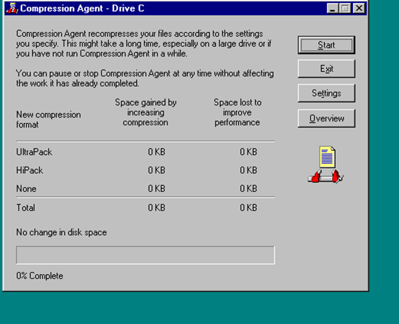

Compress Agent Win95/98
Compress Agent – встроенная утилита Windows 95 – 98 для компоновки пространства использующая способ сжатия UltraPack (На тот момент являлся одним из самых сверхмощным методом сжатия, а так же достаточно быстрым по сравнению со своими аналогами).

Подробнее о Compress Agent
- Необходимо отметить, что Агент сжатия "проходит" по всем ранее сжатым профаммой DriveSpace файлам логического диска. При этом, применяя метод компрессии UltraPack, сжимает файлы до минимального размера, в результате чего еще больше увеличивается информационная емкость жестких дисков.
- При использовании ОС Windows 95 данная профамма устанавливается вместе с DriveSpace 3 из профаммного пакета Microsoft Plus! for Windows 95. Профамма Агент сжатия входит в пакет утилит операционных систем Windows 95 OSR2 и Windows 98.
- Хотя разработчики операционной системы Windows 9x и не рекомендуют использовать метод UltraPack на компьютерах с процессорами типа i486 (как отмечается в документации, ввиду сравнительно низкой производительности подобных аппаратных средств), их производительность при использовании данного метода понижается незначительно. Это означает, что алгоритм UltraPack является достаточно быстрым и оптимальным даже для таких сравнительно малопроизводительных компьютеров, какими являются системы, созданные на основе процессоров i486 и их аналогов. Конечно, такая оценка справедлива только по современным меркам, учитывающим возможности новейших персональных компьютеров с процессорами Intel Pentium III, Intel Pentium 4, AMD Athlon.